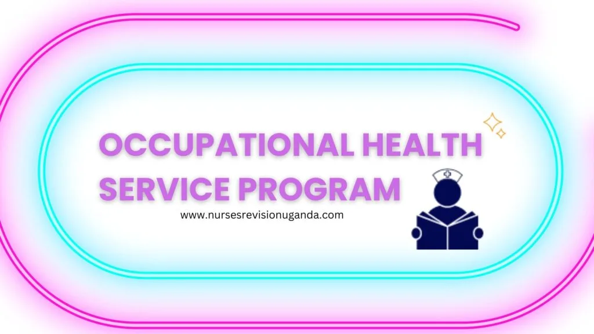

Expanded Nursing Uganda Explanation
Occupational Health Service Program should be understood beyond a short definition. Link the concept to patient history, focused assessment, common risks, nursing priorities, documentation and evaluation of outcomes.
01 **OCCUPATIONAL HEALTH SERVICE PROGRAM**
Occupational health programs offer health services which correspond to the aims of ILO/WHO.
Such OHS programs contain preventive, control, curative, treatment, rehabilitation and promotion activities for the improvement of working conditions, protection of health and for the maintenance and promotion of working capacity.
02 **Objectives/aims of Occupational Health programs at the workplace**
- To promote and maintain the highest degree of positive health and welfare of workers in all aspects of occupations.
- To prevent health declination (sickness and accidents) due to working occupations.
- To protect workers from factors that affect their health during employment
- To assist the injured and disabled for rehabilitation.
- To improve human efficiency in his work by applying ergonomics
- To provide a self-occupational environment in order to safeguard the health of the workers and to set up industrial production.
03 **Principles of occupational Health and Safety programs**
The basic principles for the development of occupational health and safety services are as follows:
- The service must optimally be preventive oriented and multidisciplinary.
- The service provided should integrate and complement the existing public health service.
- The service should address environmental considerations
- The service should involve participation of social partners and other stakeholders
- The service should be delivered on criticized approach
- The service should base up to date information, education, training, consultancy, advisory services and research findings
- The service should be considered as an investment
04 **Benefits of OHS service program**
- Reduce injuries and disability
- Control and prevention of infections
- Improved quality of life
- Saves money lost due to diseases, injuries and insurance compensations
- Improves productive labour force.
05 **OSH committees**
In order to implement OSH policy, the MOH in conjunction with the Ministry of Gender, Labor and Social Development has instituted OSH committees at different levels. These include the following
- National OSH committee (has 9 members)
- District OSH committee (9 members)
- HSD OSH committee (7 members)
- Health unit OSH committee (5 members) each committee has specific roles and responsibilities.
- Coordinate consultation and risk management implementation.
- Evaluate the hazards, and make recommendations for prevention.
- Compile and analyze injury data for appropriate action.
- Regular reviews and analyze data from the exposure incidents within the institution.
- Ensure appropriate follow up and post exposure prophylaxis.
The responsibility of occupational health nurse is threefold e.g.
- a) To the worker
- b) To the employer
- c) To his or her professional colleagues
The following are nursing functions in occupational health programs
- To participate in the health assessment (physical and Psychological assessment) of workers to facilitate proper recruitment (selection and placement).
- Prevention of occupational and non-occupational illnesses through health education, training, health surveillance and screening.
- Provisions for treatment/provide nursing care to workers with both occupational and non occupational illnesses.
- Provision of referral services to those who require advanced care.
- Counsel workers regarding personal and family health problems i.e. conduct health education and counseling.
- Advocate and or advise on occupational sanitation or industrial hygiene and safety education activities.
- Participate in planning for occupational health activities by establishing mutual goals and objectives of OHP.
- Work cooperatively (collaborate, communicate and consult) with other professional and non professional staff.
- Maintains accurate and complete health records of the workers.
- Participate in rehabilitation and resettlement of those who have been disabled as a result of the occupations.
- Participate in evaluation of health programs and activities.
Occupational health programs aim to: a) Improve working conditions b) Enhance worker efficiency c) Prevent health decline due to work d) All of the above Answer: d) All of the above
Explanation: Occupational health programs encompass activities that improve working conditions, protect workers’ health, enhance their efficiency, and prevent health decline resulting from work-related factors.
Which of the following is not an objective of an occupational health program? a) Promoting positive health and welfare of workers b) Preventing accidents and illnesses in the workplace c) Maximizing profits for the employer d) Assisting injured and disabled workers in rehabilitation Answer: c) Maximizing profits for the employer
Explanation: Occupational health programs prioritize the well-being of workers and focus on preventing accidents and illnesses. Maximizing profits, although important for employers, is not a specific objective of occupational health programs.
Which principle is crucial for the development of occupational health and safety services? a) Prevention-oriented and multidisciplinary approach b) Sole reliance on the existing public health service c) Neglecting environmental considerations d) Excluding social partners and stakeholders Answer: a) Prevention-oriented and multidisciplinary approach
Explanation: The development of occupational health and safety services should have a preventive orientation and involve a multidisciplinary approach to address the various aspects of worker health and safety.
What is a benefit of implementing an occupational health service program? a) Reduced injuries and disability b) Increased healthcare costs c) Decreased productivity d) Higher insurance compensations Answer: a) Reduced injuries and disability
Explanation: Implementing an occupational health service program helps in reducing injuries and disability among workers, leading to improved overall health and well-being.
What are the roles and responsibilities of a health unit OSH committee? a) Coordinate consultation and risk management b) Evaluate hazards and make prevention recommendations c) Conduct health education and counseling d) All of the above Answer: d) All of the above
Explanation: The roles and responsibilities of a health unit OSH committee include coordinating consultation and risk management, evaluating hazards, making prevention recommendations, and conducting health education and counseling.
06 Fill in the Blanks (FIBs):
The aim of occupational health programs is to promote and maintain the ________ degree of positive health and welfare of workers. Answer: highest Explanation: Occupational health programs strive to promote and maintain the highest degree of positive health and welfare of workers.
Occupational health nurses play a vital role in the ________ assessment of workers to ensure proper recruitment. Answer: health Explanation: Occupational health nurses are involved in conducting health assessments of workers to facilitate appropriate recruitment, which includes selection and placement processes.
Occupational health programs focus on the prevention of both ________ and non-occupational illnesses through various interventions. Answer: occupational Explanation: Occupational health programs aim to prevent both occupational and non-occupational illnesses among workers by implementing health education, training, health surveillance, and screening activities.
Nurses in occupational health programs are responsible for providing nursing care to workers with ________ illnesses. Answer: occupational and non-occupational Explanation: Nurses in occupational health programs are responsible for providing nursing care to workers who experience both occupational and non-occupational illnesses.
One of the responsibilities of occupational health nurses is to participate in the ________ and resettlement of workers who have been disabled due to their occupations. Answer: rehabilitation Explanation: Occupational health nurses play a role in the rehabilitation and resettlement process of workers who have been disabled as a result of their work-related activities.
07 Nursing Uganda Clinical Lens
Use Occupational Health Service Program as a practical nursing topic, not only a memorized definition. Translate theory into safe decisions, accountability, communication and service improvement.
- What to understand first: define occupational health service program, identify the normal or expected pattern, then explain what changes when the patient is unwell.
- Why it matters in care: the nurse must recognize risk early, explain findings clearly, document accurately and know when to escalate.
- How to revise it: connect each point to assessment, nursing diagnosis or care problem, intervention, rationale and evaluation.
08 Assessment Guide
- The problem, stakeholders, available resources, policy requirements and ethical issues.
- Risks to patients, staff, confidentiality, quality, costs and continuity.
- Documentation, reporting lines, supervision and evaluation measures.
09 Nursing Priorities, Rationales and Outcomes
- Use evidence, policy and professional standards to guide action.
- Communicate clearly, document decisions and protect confidentiality.
- Evaluate whether the action improves safety, learning or service delivery.
The rationale for these priorities is patient safety: nursing actions should prevent deterioration, reduce discomfort, support recovery and create clear evidence for the next caregiver.
- Expected outcome: The plan is documented, realistic, ethical and improves patient care or learning outcomes.
10 Patient Teaching and Revision Check
- Explain occupational health service program in simple language the patient or caregiver can repeat back.
- Teach warning signs, medicine or follow-up instructions, hygiene or lifestyle points where relevant.
- For exams, prepare a short answer using: definition, causes or risk factors, signs, assessment, management, complications and prevention.
- For ward practice, document baseline findings, actions taken, patient response and the plan for review.
Illustrations and Diagrams (2)


Related Video Lectures
Watch nursing lecture videos on YouTube for this topic. Opens in a new tab.
Watch on YouTubeExternal link: YouTube may use its own cookies and terms. Nursing Uganda is not affiliated with YouTube.